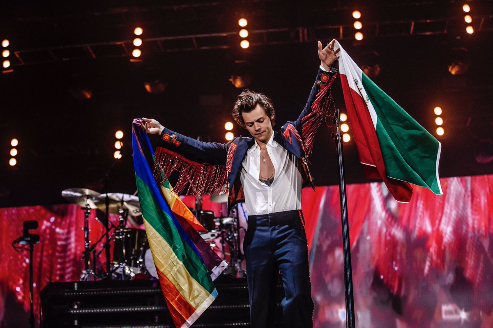

LIVE ON TOUR
Harry Styles: Live On Tour fue la primera gira musical del cantante británico Harry Styles, de cara a promocionar su primer álbum en solitario. El tour arrancó previsiblemente el 19 de septiembre de 2017 en San Francisco y posteriormente continuó por Latinoamérica, Europa, Asia y Oceanía con un total de 89 conciertos alrededor del mundo.

En junio de 2016 se confirmó que Styles había firmado un contrato con Columbia Records para lanzar un álbum como solista. Más tarde, el 7 de abril de 2017, el cantante lanzó su primer single en solitario "Sign Of The Times". El álbum fue lanzado al mercado el 12 de mayo de 2017. La gira fue oficialmente anunciada el 28 de abril de 2017, a través de Twitter y la página web oficial del cantante. En Norteamérica, las entradas de pre-venta estaban disponibles a través de la plataforma "Verified Fan" de Ticketmaster. Esta medida ayuda a prevenir scalping, una forma de operar a muy corto plazo (una entrada puede durar como 5 o 30 minutos).
Las entradas para los espectáculos anunciados se vendieron en cuestión de minutos, causando una gran demanda y furor por parte de sus seguidores. Styles publicó en su cuenta de Twitter que estaba abrumado con el éxito de la gira y mostró su deseo de ampliar la gira en 2018. El pasado 8 de junio de 2017 anunció nuevas fechas, esta vez en recintos de mayor capacidad de audiencia.
FESTIVAL "WE CAN SURVIVE"
El 8 de septiembre de 2017 se anunció que Styles participaría en el festival We Can Survive el cual se celebraría en el Hollywood Bowl de Los Ángeles el 21 de octubre de ese mismo año. Styles compartió escenario con grandes artistas como Lorde, Alessia Cara, P!nk, Sam Smith y su compañero de One Direction, Niall Horan.
|
 |
REPERTORIO DE CANCIONES
"Only Angel"
"Woman"
"Ever Since New York"
"Two Ghosts"
"Carolina"
"Stockholm Syndrome" (cover de One Direction)
"Just a Little Bit of Your Heart" (cover de Ariana Grande)
"Medicine"
"Meet Me in the Hallway"
"Sweet Creature"
"If I Could Fly" (cover de One Direction)
"Anna"
"What Makes You Beautiful" (cover de One Direction)
"Sign of The Times"
"From the Dinning Table"
"The Chain" (cover de Fletwood Mac)
"Kiwi"
"You're Still Then One" (cover de Shania Twain)
"Girl Crush" (cover de Little Big Town)
EL TOUR SE DIVIDIO EN DOS ETAPAS
EL "LIVE ON TOUR" TUVO UN TREMENDO ÉXITO, CON MUCHAS VENTAS DE ENTRADAS Y MERCANCIA, TODAS ESTAS GANANCIAS FUERON RECAUDADAS Y DONADAS PARA LAS ORGANIZACIONES BÉNEFICAS LOCALES DE SUS GIRAS EN TODO EL MUNDO.
LOVE ON TOUR
El Love on Tour es la segunda gira de conciertos del cantante británico Harry Styles, la cual promocionará su segundo álbum de estudio "Fine Line". La gira comenzará el 26 de junio de 2020 en Filadelfia, Estados Unidos y concluirá tentativamente el 30 de marzo en Moscú, Rusia.

El 13 de noviembre de 2019, Styles anunció las primeras fechas de su segunda gira, las cuales serían 26 fechas en Europa y 37 en Norteamérica, también el cantante anunció que los teloneros del tour, que serían Jenny Lewis en la parte norteamericana, Koffee en los tres conciertos en México y King Princess en la parte europea.1 El 21 de noviembre se anuncian fechas adicionales en Nueva York, Atlanta, Orlando e Inglewood.
Las fechas de Latinoamérica se anuncian el 3 de diciembre y constarían en 6 fechas en Brasil, Argentina, Chile, Perú y Colombia; el telonero de toda la etapa latinoamericana sería Koffee. El 24 de febrero de 2020 Styles anuncia nuevos teloneros en Reino Unido e Irlanda, los cuales serían Joy Crookes y Swim Deep.
FECHAS LOVE TOUR
El 25 de marzo se anuncia la reprogramación de las 26 fechas de la etapa europea por la Pandemia de COVID-19, aplazando esta etapa de abril, mayo y junio de 2020 hasta febrero y marzo de 2021
HARRY STYLES regreso este 2021 a cantar, en la gran ceremonia anual de la entrega de los premios GRAMMYS 2021, Harry Styles fue el encargado de dar el pistoletazo de salida a los Premios Grammy 2021. Se iba a redimir poco después ganando el Grammy a Mejor Interpretación Pop en Solitario gracias, precisamente, a Watermelon Sugar. Harry nunca olvidará este año en el que consiguió su primer premio Grammy en su historia.
Harry hizo una gran interpretación en su acto, fue fabuloso y fue considerado uno de los mejores performance de todos los Grammys
AHORA MISMO SE ESTA ESPERANDO LAS NUEVAS FECHAS DEL TOUR, AL IGUAL QUE LA VENTA DE BOLETOS, AUNQUE EN LA PÁGINA DE TICKETMASTER YA APARECEN EN VENTA PARA MÉXICO
TICKETMASTER HARRY STYLES
CLIC EN LA FOTO
